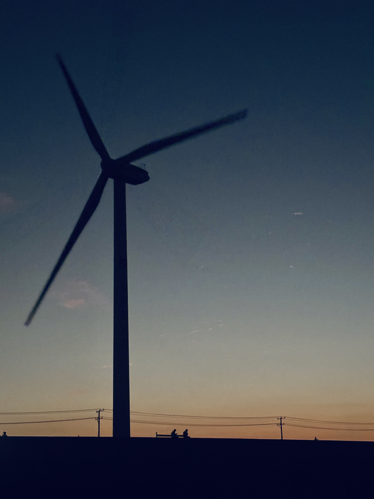
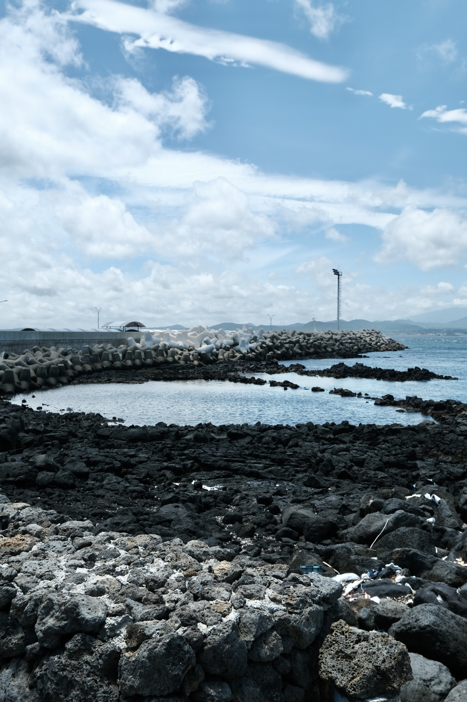
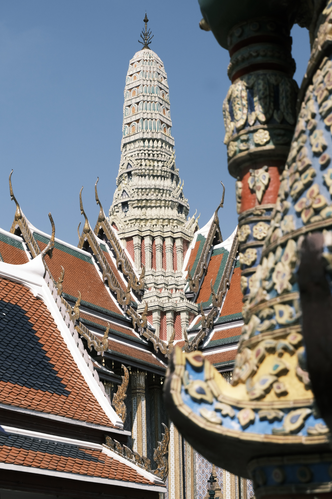
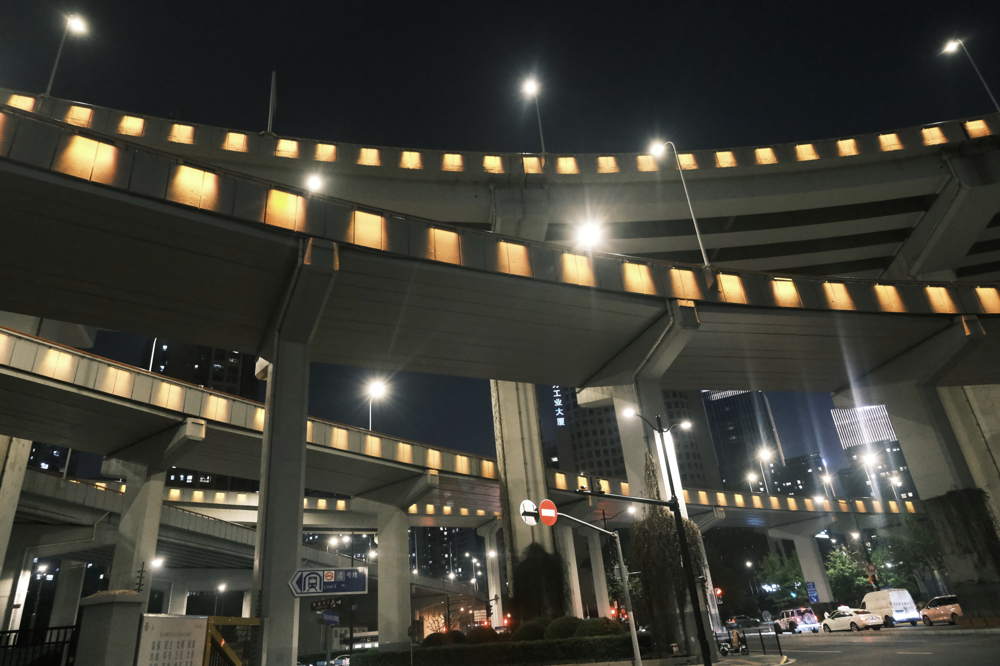
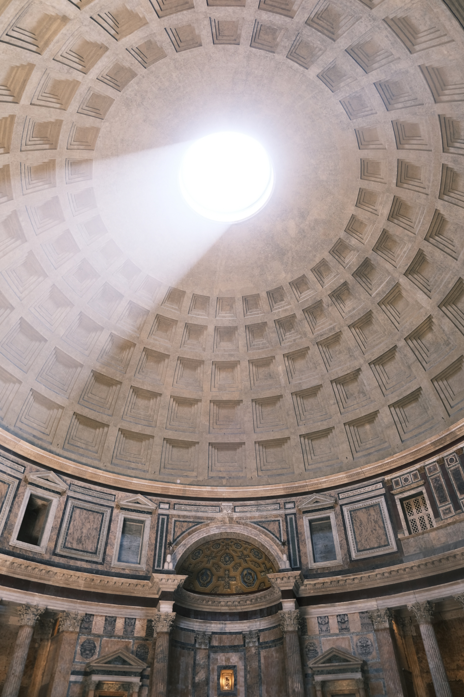

我的摄影相册
按照题材划分为风光、建筑、人文、动物、植物五类，每一张照片都是一次观察世界的尝试。
风光
Landscape
山川、海岸、云海与日落，记录在路上的风与光。





注：图片路径占位，替换为你在 images/ 目录中的真实文件名即可。
建筑
Architecture
城市街区、老建筑与现代楼宇，记录人类空间的秩序与想象。








如果建筑类照片不足 10 张，可以直接删除多余的 photo-item 块。
人文
People & Culture
街头、旅人、日常生活的片段，记录情绪与故事。


动物
Animals
流浪猫狗、野生动物与偶遇的小生命。


植物
Plants
花草、树木、枝叶细节，让季节在画面中缓慢流动。